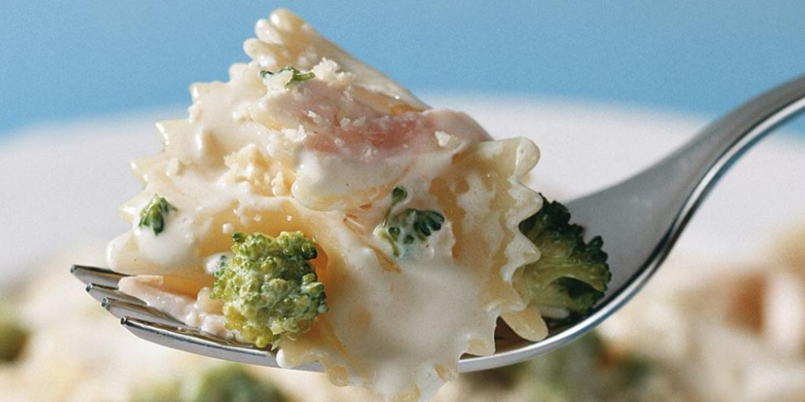

Receita de farfalle com brócolis cremoso

Como o pai hoje tá chique, vamo fazer uma receita com um nome mais difícil "Farfalle com brócolis
cremoso".
Brincadeiras a parte, este é apenas o nome do tipo de macarrão a ser utilizado, outro ponto que vale ressaltar
é
que embora o nome possa indicar, a receita não é vegana! O que de forma nehuma o impede de muda-la a sua
vontade.
Por fim, esta será uma das mais fáceis e com menos ingredientes que já preparei, e ainda sim, seu sabor é
fenomenal.
Ingredientes:
- 150g de peito de perú defumado, pode ser fatiado ou em tiras
- 300g de brócolis em pequenos ramos
- 1 lata ou caixa de creme de leite, preferencialmente freco
- 250g de macarrão tipo farfalle
- sal e pimenta a gosto
Modo de preparo:
- Em uma panela, ferva água suficiente para cobrir o macarrão.
- Com a água fervendo, adicione seu macarrão com bastante sal.
- Enquanto isso, em um recipiente, misture o brócolis, o peito de perú e o creme de leite.
- Tempere com sal e pimenta a gosto.
- Quando o macarrão estiver al dente escorra a água.
- Reservando um pouco da água do cozimento e lembre-se: não jogue água fria.
- Junte o macarrão ao creme de forma uniforme.
- Leve ao forno a 200°C por 10 minutos
- Está pronto ára servir.
Nota:
Como já dito, podesubistituir o peito de perú pela sua proteína a sua escolha, ou até mesmo não utiliza-la. Caso
queira ver mais receitas poderá encontra-las aqui